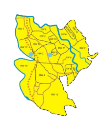

Hello, Sobat Cipsmart!
Profil Kelurahan Cipaku
Luas Wilayah:
± 174 hektar
Jumlah Penduduk:
12.310
Jumlah RW:
12
Laki-laki:
6.181
Perempuan:
6.129
Jumlah RT:
29
Anak-anak (0-12 th):
3.386
Remaja (13-19 th):
1.539
Dewasa (>20 th):
7.382
Tamat SD-SMP:
6.139
Tamat SMA:
5.660
Tamat Sarjana:
200

Kelurahan Cipaku merupakan salah satu kelurahan yang terletak di Kecamatan Bogor Selatan, Kota Bogor, Jawa Barat, Indonesia. Mayoritas penduduk di Kelurahan Cipaku bekerja sebagai buruh, pedagang, pengrajin industri rumah tangga, pengusaha kecil dan menengah, pegawai swasta dan lain-lain. Karena berada di wilayah Kota Bogor, kelurahan Cipaku sebagian besar diperuntukkan untuk pemakaman/kuburan Thiong Hoa/China. Masih banyak kekurangan yang dimiliki oleh kelurahan ini, masalah terbesarnya yaitu rendahnya kualitas SDM, minat literasi yang rendah, dan tingginya angka putus sekolah.